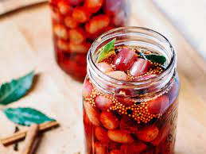

Home
Pickled Grapes

Description
Ingredients
- 2 pounds organic seedless grapes(about 6 cups), green, red, black, or a mixture, stemmed
- 3 sprigs fresh tarragon
- 3 cloves garlic, crushed
- 2 cups white wine vinegar
- 1 cup water
- 1/2 cup sugar
- 2 tablespoons kosher salt
Steps
- Pack the grapes into pint jars. Add a sprig of tarragon and a garlic clove to each jar.
- In a small saucepan over medium heat, combine the vinegar, water, sugar, and salt. Bring to a simmer, stirring to dissolve the sugar and salt, then pour the hot brine over the grapes
- Let cool to room temperature, the cover tightly and refrigerate
- The grapes are ready to eat in 1 day but will keep, refrigerated, for 1 month